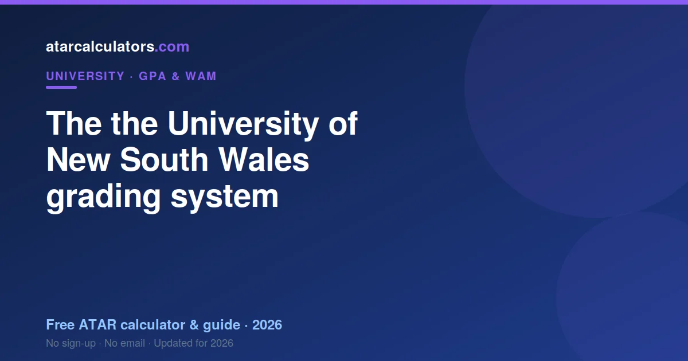
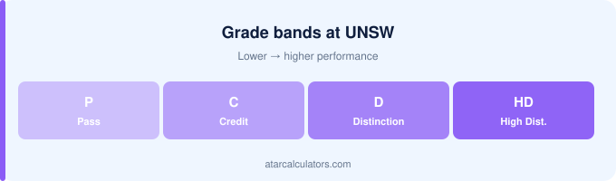

UNSW grades are High Distinction (85 to 100), Distinction (75 to 84), Credit (65 to 74), Pass (50 to 64) and Fail (below 50). UNSW uses a Weighted Average Mark (WAM) as its main academic measure, and also reports a GPA on both a 4.0 and a 7.0 scale. Its High Distinction starts at 85, higher than at some universities, so its bands sit high.
Key takeaways
- UNSW uses five grade bands from High Distinction to Fail.
- A High Distinction is 85 or above.
- The pass mark is 50.
- UNSW leads with WAM, and also reports a GPA.
- UNSW reports a GPA on 4.0 and 7.0 scales.
- Grade bands differ between universities.

The grades UNSW uses
UNSW reports results using five grade bands: High Distinction, Distinction, Credit, Pass and Fail. Each band covers a range of marks, and together they describe how you performed in a unit.
These grades are the building blocks of your academic record. Your WAM and any GPA are both derived from the marks behind them, so understanding the bands is the first step to understanding your results at UNSW.
The grade bands in detail
Here are the UNSW grade bands and their mark ranges. The exact boundaries are set by the university and apply across most units.
| Grade | Mark range | GPA point |
|---|---|---|
| High Distinction (HD) | 85–100 | 7 |
| Distinction (D) | 75–84 | 6 |
| Credit (CR) | 65–74 | 5 |
| Pass (PS) | 50–64 | 4 |
| Fail (FL) | 0–49 | 0 |
UNSW sets its High Distinction at 85, higher than the 80 some universities use. So a mark that would be a High Distinction elsewhere may be a Distinction at UNSW, which is why university-specific bands matter.
What counts as a top grade at UNSW
At UNSW, the highest grade, High Distinction, requires a mark of 85 or above. This is higher than the 80 that universities such as Monash and Melbourne use for their top grade, so UNSW sets its top band at a higher mark.
So if you are aiming for top grades, 85 is the number to clear in each unit. Knowing this helps you see exactly how far a given mark is from the top band, and target the units where you are closest.
The pass mark
The pass mark at UNSW is 50. A mark of 50 to 64 is a Pass, and anything below 50 is a fail. So 50 is the line you must clear to pass a unit and earn its credit points.
Passing matters for progression and for your record, since a fail usually counts as zero in your average and still consumes credit points. So clearing 50 in every unit protects both your progress and your WAM.
WAM and GPA at UNSW
UNSW uses a Weighted Average Mark (WAM) as its main academic measure, and also reports a GPA on both a 4.0 and a 7.0 scale. So at UNSW you have a WAM plus a GPA, with WAM as the primary figure.
The difference matters because the two can tell slightly different stories. WAM keeps the full detail of your marks, distinguishing a 71 from a 78, while GPA compresses both into the same band. See UNSW WAM vs GPA for the full comparison.
For most UNSW purposes, such as honours and awards, your WAM is the measure that counts. A GPA is useful mainly when an external body, such as an overseas university, asks for one.
The GPA point values
To turn your grades into a GPA, each grade maps to a point on the 7-point scale: High Distinction 7, Distinction 6, Credit 5, Pass 4 and Fail 0. You then take the credit-weighted average of those points.
This mapping is how a set of grades becomes a single GPA figure. Because larger units carry more credit points, they weigh more heavily in the result. See how to calculate your UNSW GPA.
How fails and repeats work
A failed unit usually counts as zero in your WAM and GPA, and its credit points still count in the total you divide by. So a fail lowers your average in two ways: it contributes nothing, and it enlarges the denominator.
Some units can be repeated, and UNSW’s rules determine whether the original fail still counts towards your average. Check the policy, since a repeated unit’s effect on your record depends on how the university treats it.
Non-graded results
Some UNSW units are assessed on a satisfactory or pass-fail basis, without a graded mark. These usually sit outside your WAM and GPA, neither raising nor lowering them, because they carry no percentage to average.
So if your average does not match your own calculation, a non-graded unit may be the reason. Check which of your units are graded and which are not, since only graded units feed your WAM and GPA.
How UNSW compares to other universities
UNSW sets its High Distinction at 85 and uses WAM as its main measure, which differs from universities that use a High Distinction of 80 or that lead with GPA. So a raw average does not always translate directly between institutions, and a grade name can mean different marks at different universities.
This matters if you are comparing offers, transferring, or applying elsewhere. Use UNSW’s own bands for your UNSW results, and each other institution’s bands for theirs, rather than assuming a single national standard.
Using your grades to plan
Knowing UNSW’s bands helps you plan. Because each grade has a clear mark range, you can see how far a given mark is from the next band, and target the units where you are closest to a boundary.
This is useful for lifting your average efficiently. A few marks that raise your average, or cross a band boundary, are worth targeting. Understanding the bands turns your transcript into something you can actively work with.
Calculate your UNSW GPA
Rather than work it out by hand, use our UNSW GPA calculator. Enter your grades and credit points, and it applies the scale and credit weighting to give your GPA.
It is the quickest way to see where you stand, and to test how a grade in an upcoming unit would change your result.
Where to find your result
Your WAM, and any GPA, are shown in your UNSW student portal and on your academic transcript, calculated automatically from your grades. So you rarely have to work them out by hand, though knowing the method helps you check them and plan ahead.
If you cannot find a figure you expect, it may be that UNSW leads with a different measure, or shows it only on request. In that case you can calculate it yourself from your grades and credit points, or ask student administration.
Cumulative vs semester average
There are two averages worth knowing. Your semester average covers a single study period, while your cumulative average covers your whole degree so far. The cumulative figure is the one most programs and employers mean when they ask.
Watching both is useful. A strong semester average shows recent improvement, while your cumulative average shows your overall standing. If you are recovering from a weak start, your semester averages will rise before your cumulative one catches up.
How your average is rounded
Averages are usually reported to two decimal places. UNSW rounds the final figure using its own rule, so a borderline average may round up or down depending on the exact policy.
This matters at a threshold. If a program requires a certain average and yours calculates just below it, whether it rounds up depends on UNSW’s rounding rule. So when you are close to a cut-off, check how UNSW rounds.
Why the bands matter
A few marks that cross a boundary, or simply raise your average, are worth targeting. Understanding the bands turns your transcript from a report card into a tool you can actively work with.
Lifting your grades
Because your average is built from your marks, small gains across several units add up. Targeting the units where you are near a boundary, using UNSW’s academic support, and prioritising high-credit units all help lift your average efficiently.
So improvement is rarely one dramatic leap; it is steady, targeted effort across your program. See how to improve your GPA for more strategies that apply at UNSW.
Using your grades to plan ahead
Once you understand UNSW’s bands and how WAM and GPA work, use them to plan rather than just to worry. Knowing where you stand, and how much a strong grade in an upcoming unit would move your average, turns your record into a tool for decisions about honours, postgraduate study and electives.
So treat your average as a live number you can influence, not a fixed verdict. Understanding the bands and the weighting is what lets you steer it deliberately at UNSW.
Common questions
What grades does UNSW use?
UNSW uses five grade bands: High Distinction, Distinction, Credit, Pass and Fail. Each covers a range of marks, and your WAM and any GPA are derived from the marks behind them.
What mark is a top grade at UNSW?
At UNSW, the highest grade, High Distinction, requires a mark of 85 or above. This is higher than the 80 some universities use, so UNSW sets its top band high.
What counts as a Distinction-level result at UNSW?
A Distinction at UNSW is a mark of 75 to 84. Above that, 85 and over is a High Distinction; below it, 65 to 74 is a Credit.
Does UNSW use WAM or GPA?
UNSW uses a WAM as its main academic measure, and also reports a GPA on a 4.0 and a 7.0 scale. WAM is the primary figure UNSW uses for honours, awards and progression.
What is the pass mark at UNSW?
The pass mark at UNSW is 50. A mark of 50 to 64 is a Pass, and anything below 50 is a fail, which usually counts as zero in your average.